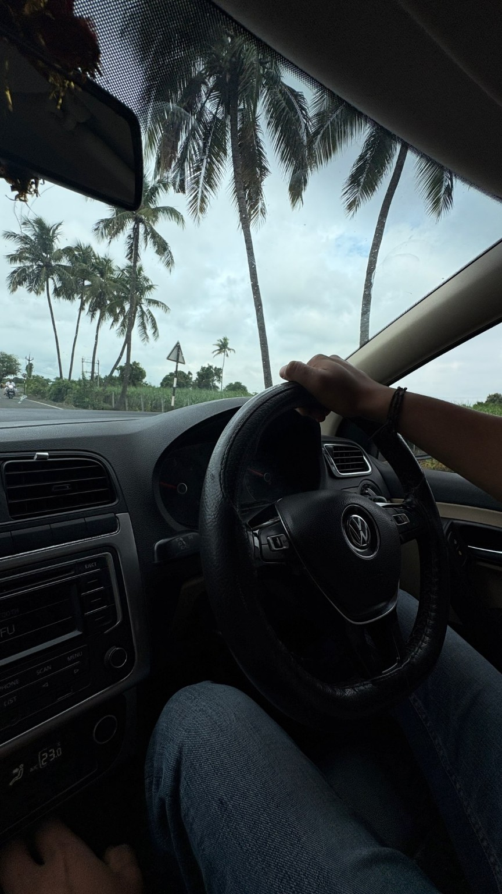
Road Trip
View from inside a Volkswagen driving along a scenic tropical road lined with palm trees.

View from inside a Volkswagen driving along a scenic tropical road lined with palm trees.
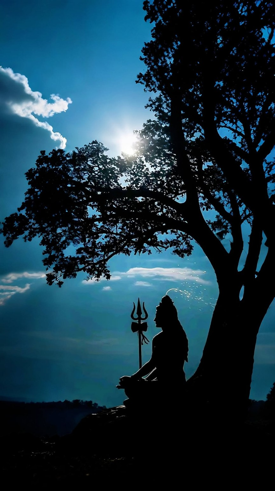
Artistic silhouette inspired by Lord Shiva beneath a peaceful tree and bright sky.
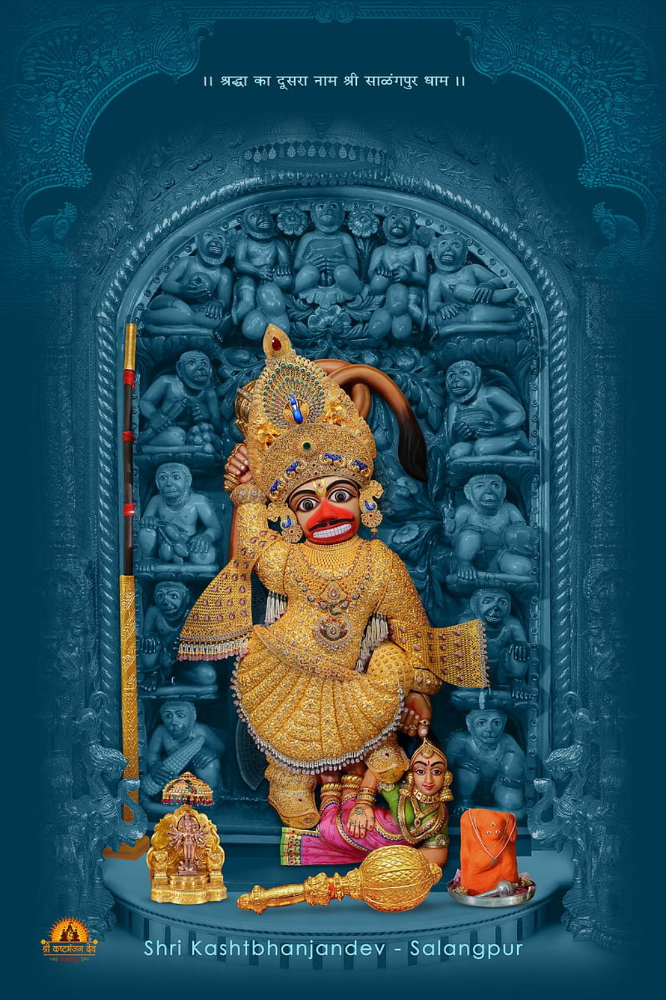
Decorated devotional image of Shri Kashtbhanjan Hanuman at Salangpur.
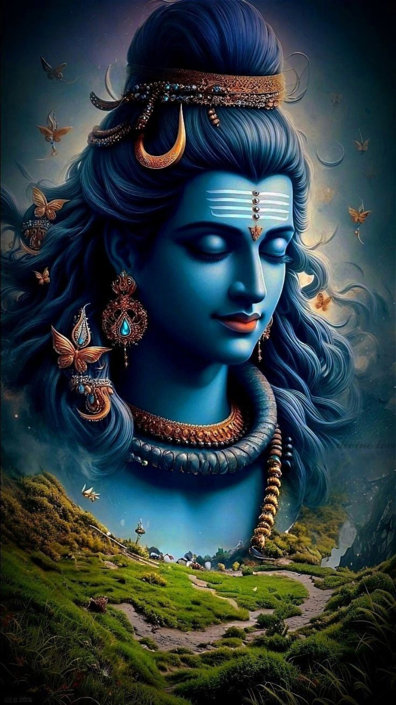
Blue-toned artistic portrait inspired by Lord Shiva.
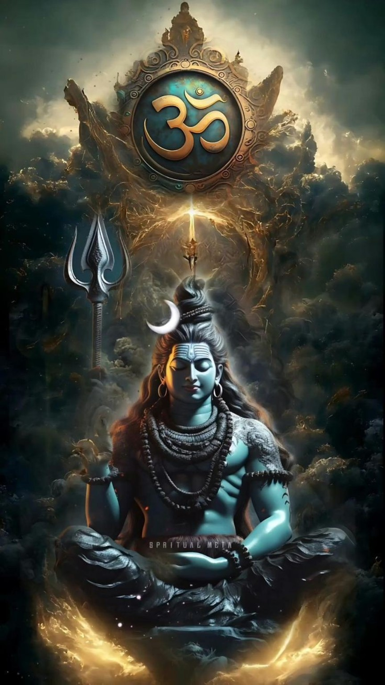
Creative spiritual artwork featuring Om symbol and Lord Shiva.
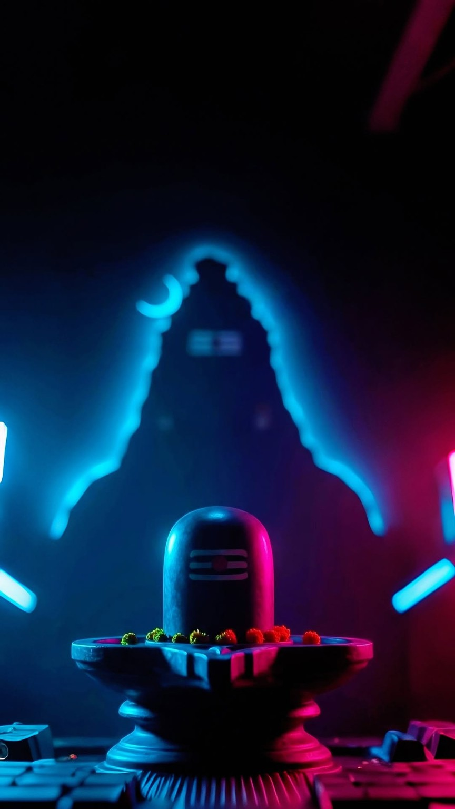
Modern neon-style Shivling themed artwork.
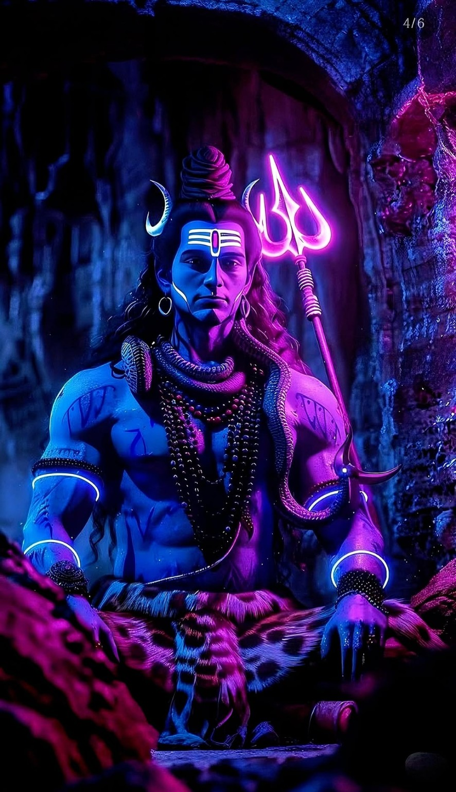
Stylized neon artwork inspired by Lord Shiva with trident.
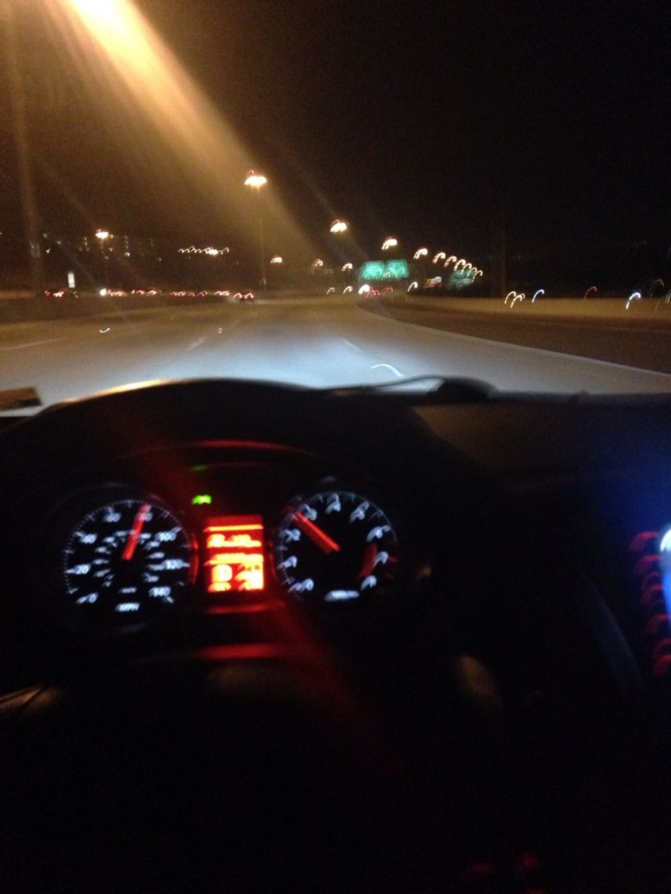
Night driving scene captured from inside a moving car.
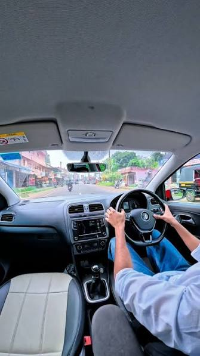
An extra gallery scene capturing the mood of travel and open roads. Let the colors and composition guide you through a calm, cinematic moment.
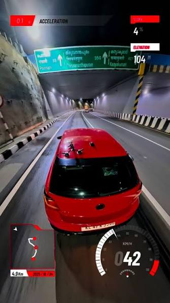
An extra gallery photo that emphasizes movement and atmosphere. The scene invites you to pause, breathe, and appreciate everyday beauty.
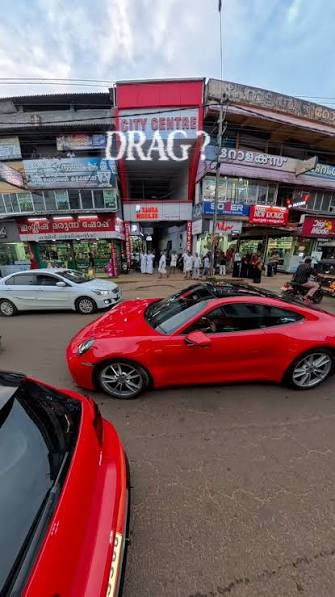
An extra gallery image with a reflective, calming feel. It’s designed to pair well with the rest of the spiritual-themed artwork in this gallery.
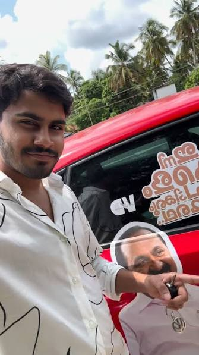
An extra gallery photo focusing on visual texture and light. The composition brings energy while still feeling grounded and accessible.
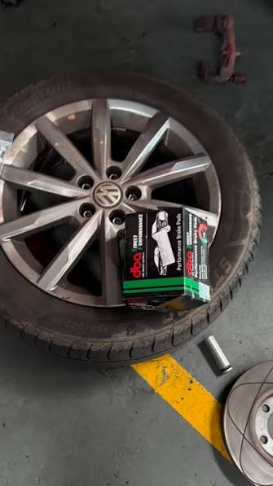
An extra gallery scene that balances simplicity with atmosphere. Perfect as a serene pause between brighter highlights.
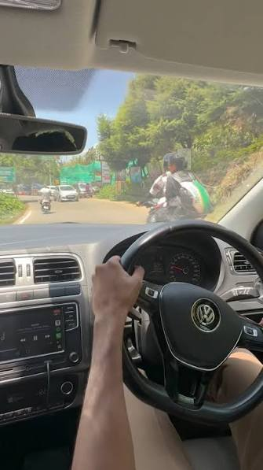
An extra gallery image that completes the set with a cohesive visual tone. Enjoy it as the gallery’s concluding view.